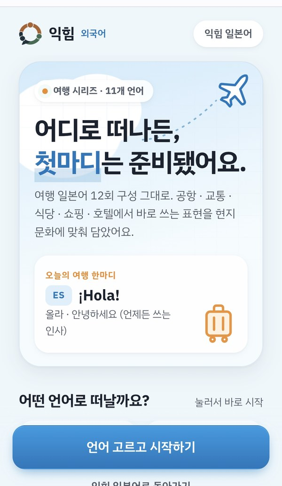
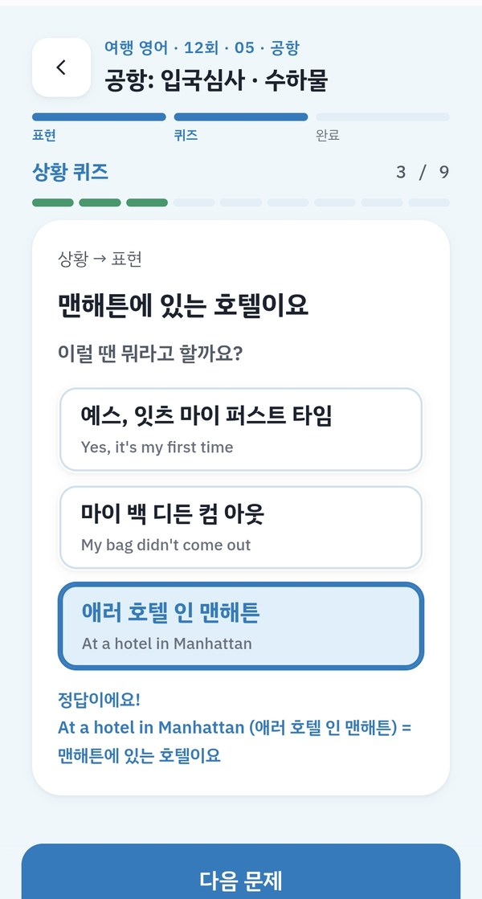
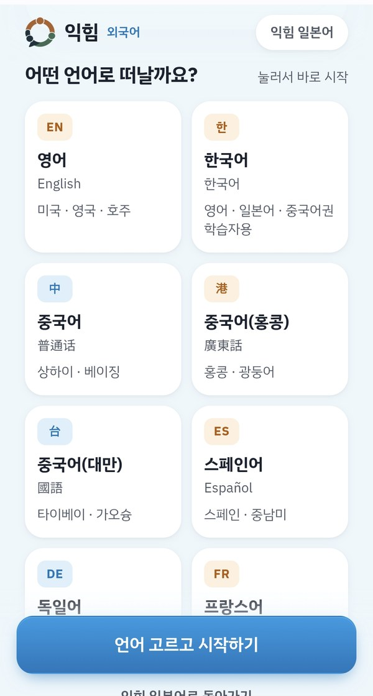
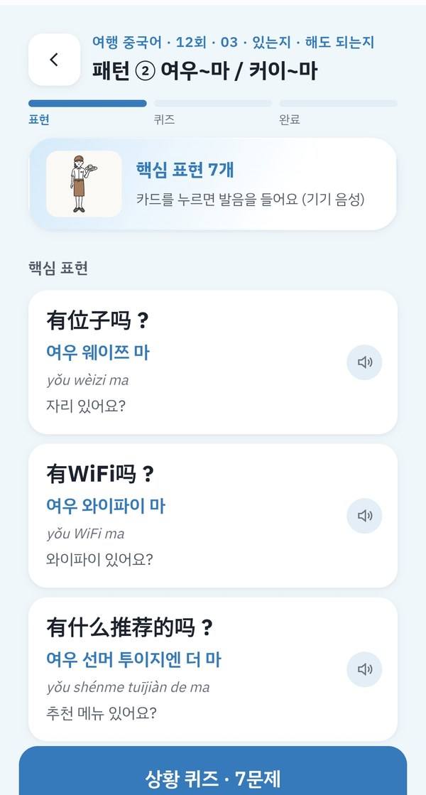
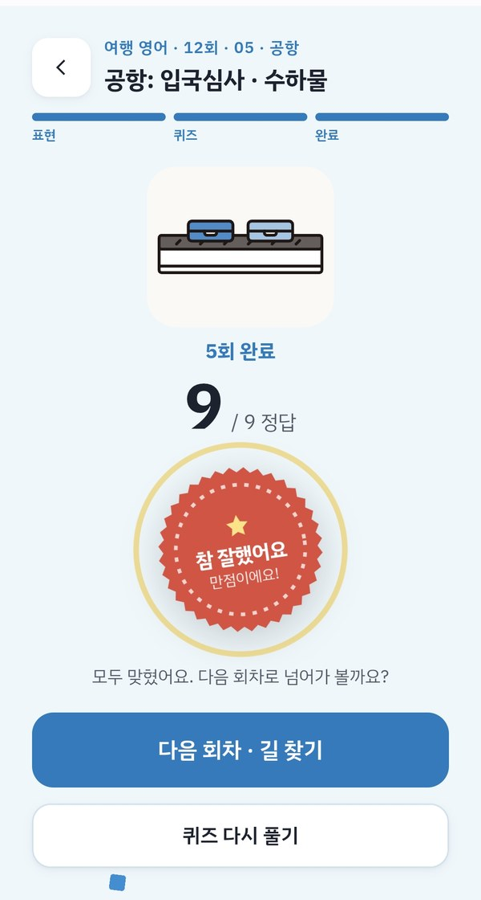
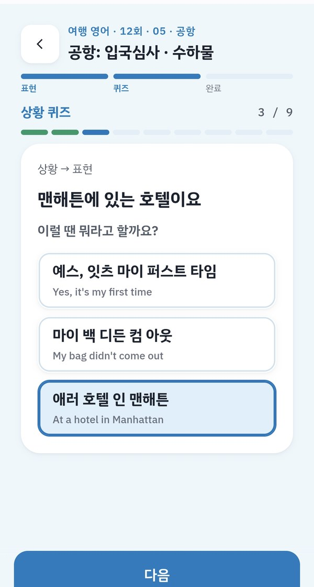
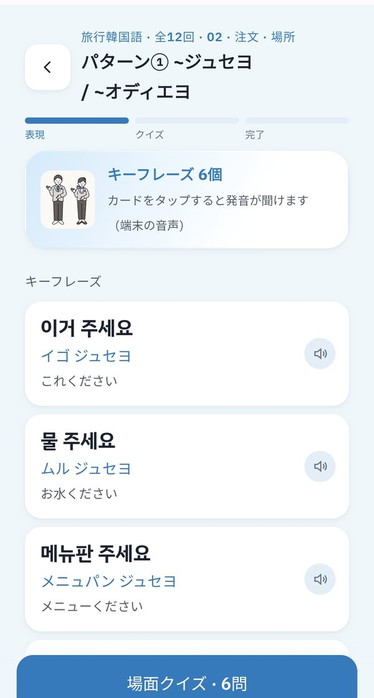

여행회화 · 무료 베타 공개 중
이번 여행,
내가 먼저 말해보세요.
주문하고, 길을 묻고, 필요한 것을 부탁하는 순간까지.
여행할 곳의 언어를 고르고, 필요한 표현부터 짧게 연습하세요.
11개 언어의 여행회화 · 설치 없이 웹에서 · 현재 무료 베타


어느 언어로
여행을 준비할까요?
배우고 싶은 언어를 선택하세요. 현재 무료 베타로 공개된 과정을 바로 경험할 수 있습니다.
- 영어English미국 · 영국 · 호주과정 보기
- 한국어한국어한국 여행 영어 · 일본어 · 중국어권 학습자를 위한 안내 지원과정 보기
- 중국어普通话상하이 · 베이징과정 보기
- 중국어 (홍콩)廣東話홍콩 · 광둥어과정 보기
- 중국어 (대만)國語타이베이 · 가오슝과정 보기
- 스페인어Español스페인 · 중남미과정 보기
- 독일어Deutsch독일어권과정 보기
- 프랑스어Français프랑스어권과정 보기
- 태국어ภาษาไทย태국과정 보기
- 베트남어Tiếng Việt베트남과정 보기
- 아랍어العربية아랍어권과정 보기
언어별로 공개된 회차와 제공 기능이 다를 수 있습니다. 각 과정 화면에서 현재 이용 가능한 내용을 확인하실 수 있습니다.
일본어 학습은 익힘 일본어에서 문법 · 기초 · 여행 · 뉴스 과정으로 따로 제공합니다.
하고 싶은 말은 있는데,
막상 그 순간에는 망설여지나요?
-
주문할 때마다 표현을 다시 검색한다
메뉴는 골랐는데, 수량이나 요청 사항을 어떻게 말해야 할지 찾게 됩니다.
-
무엇부터 공부할지 정하기 어렵다
문법부터 시작하기에는 부담스럽고, 여행 표현을 모두 외우자니 범위가 넓습니다.
-
읽으면 알겠는데 말하려면 떠오르지 않는다
눈으로 익힌 표현을 실제 상황에서 꺼내려면 직접 연습할 기회가 필요합니다.
익힘에서는 내가 겪을 여행 장면을 고르고,
그 순간에 필요한 말부터 준비합니다.
언어를 고르고,
필요한 장면부터 시작하세요.
-

배울 언어를 고릅니다
이번 여행에서 사용하고 싶은 언어를 선택합니다.
-

회차의 표현을 확인합니다
공개된 회차에서 핵심 표현과 뜻을 보고, 카드를 눌러 발음을 들어봅니다.
-

상황 퀴즈로 확인합니다
배운 표현을 상황 문제로 확인하고 회차를 마칩니다. 다시 풀어볼 수도 있습니다.
내 여행에 필요한 장면부터.
각 언어는 12회 구성으로, 공항 · 교통 · 식당 · 쇼핑 · 호텔에서 바로 쓰는 표현을 담았습니다. 전체를 한꺼번에 공부하지 않아도 괜찮습니다. 곧 사용할 상황의 표현부터 살펴보세요.
- 공항
입국심사와 수하물에서 필요한 말 주고받기
- 교통
목적지와 이동 방법 묻기
- 식당
자리 · 메뉴 · 수량을 말하며 주문하기
- 쇼핑
원하는 상품과 조건 확인하기
- 호텔
체크인과 필요한 사항 요청하기

어떤 상황예시는 여행 영어 5회, 공항 입국심사 · 수하물입니다.
무엇을 연습상황을 보고 그 자리에서 쓸 표현을 고릅니다.
어디서 확인고른 뒤 바로 정답과 뜻을 함께 확인합니다.
이 상황 학습하기위 분류는 안내를 위한 예시이며, 실제 제공 중인 상황은 언어별 과정 화면에서 확인하실 수 있습니다.
한국 여행을 준비하는 분도
함께 시작할 수 있습니다.
한국어 과정은 영어 · 일본어 · 중국어권 학습자를 위한 안내를 제공합니다. 익숙한 언어의 설명을 참고하며 한국 여행에서 사용할 표현을 배워보세요.
- 배우는 언어
- 한국어
- 설명을 읽는 언어
- English · 日本語 · 中文
안내 언어 지원 범위는 과정마다 다릅니다. 다른 외국어 과정이 모두 같은 안내 언어를 제공하는 것은 아니며, 이 랜딩 페이지 자체는 현재 한국어로만 제공됩니다.

지금은 무료 베타.
직접 경험하고 의견을 들려주세요.
현재 공개된 여행회화 과정을 무료로 이용할 수 있습니다. 실제로 사용해보며 느낀 표현의 난이도, 설명의 이해도, 화면의 편의성을 알려주세요.
- 베타 기간 결제 없음
- 설치 없이 웹에서 이용
- 공개된 언어별 과정 체험
- 의견을 반영해 콘텐츠와 기능 개선

익힘을 만드는 사람
필요한 말을 배우고,
직접 써보는 경험을 만듭니다.
익힘은 짧은 학습을 실제 활용으로 이어가기 위해 만들어졌습니다. 일본어 교육과 교재 집필 경험을 출발점으로, 여러 언어의 여행회화로 학습 범위를 넓혀가고 있습니다.
쇼타쌤 익힘 기획 / 일본어 콘텐츠
- JLPT 교재 집필
- EBS 일본어 방송 출연
- 대학 및 온라인 일본어 강의
자주 묻는 질문
어떤 언어를 배울 수 있나요?
영어, 한국어, 중국어(보통화), 중국어(홍콩 · 광둥어), 중국어(대만 · 國語), 스페인어, 독일어, 프랑스어, 태국어, 베트남어, 아랍어까지 11개 언어의 여행회화 과정이 있습니다. 현재 공개된 구성은 각 언어의 코스 화면에서 확인할 수 있습니다. 일본어는 익힘 일본어에서 별도 과정으로 제공합니다.
지금 무료로 사용할 수 있나요?
네. 현재 무료 베타로 공개되어 있으며, 베타 기간에는 결제가 없습니다.
외국어를 처음 배우는데 이용할 수 있나요?
여행 상황에서 필요한 표현부터 시작할 수 있도록 구성했습니다. 발음 표기와 설명 등 제공되는 학습 안내는 언어별 코스에서 확인해주세요.
모든 언어의 학습 분량과 기능이 같나요?
언어별로 공개된 회차와 제공 기능이 다를 수 있습니다. 각 과정에서 현재 이용 가능한 내용을 안내합니다.
한국어 과정의 설명은 어떤 언어로 볼 수 있나요?
영어 · 일본어 · 중국어권 학습자를 위한 안내를 지원합니다.
앱을 설치해야 하나요?
별도 설치 없이 웹 브라우저에서 이용할 수 있습니다.
다른 기기에서도 학습 기록이 이어지나요?
현재 베타는 기기 · 브라우저 내 기록 저장을 기준으로 운영하며, 계정 기반 자동 동기화는 제공하지 않습니다. 브라우저 데이터 삭제 시 기록이 사라질 수 있습니다.